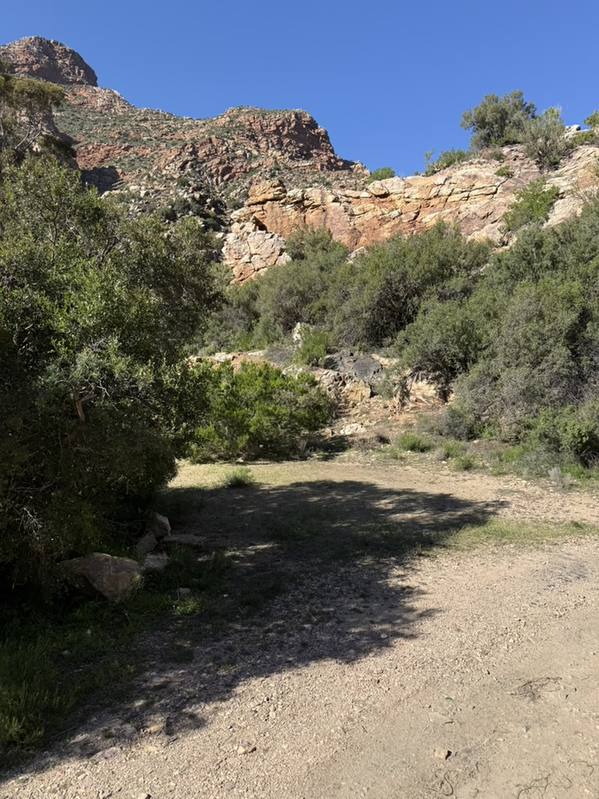

A Weekend in the Karoo
Prince Albert
Western Cape, South Africa

A Little History
Prince Albert lies at the foot of the dramatic Swartberg Mountains. European farmers began settling the area in the 18th century, drawn by reliable water flowing from the mountain catchments into an otherwise dry Karoo landscape.
The settlement began in 1762 and achieved municipal status in 1845. It was renamed Prince Albert in honour of Prince Albert, husband of Queen Victoria. The town developed as an agricultural service centre for sheep farmers, later becoming known for its orchards, olives, figs and vineyards — all supported by a sophisticated network of irrigation furrows known as leiwater.
Prince Albert is famous for its remarkably well-preserved Karoo architecture. From the 1990s onward, the town experienced a cultural and tourism renaissance as artists, writers, retirees and restaurateurs were drawn in by the scenery, the architecture and the slower pace of life. It's often described as the “Franschhoek of the Karoo.”
Things to See & Do
A few favourites, if you have time to explore before or after the wedding.
The Swartberg Mountains form a rugged barrier between the Great Karoo and the Little Karoo, stretching roughly 230km east–west across the Western Cape. They're among the oldest mountain systems in southern Africa — the rock was originally deposited as marine sediment around 500 million years ago, later folded and uplifted by tectonic compression into the dramatic parallel ridges you see today. Despite the dry surrounds, the range is a crucial water catchment, feeding the streams and the town's leiwater system.
Built between 1881 and 1888 by legendary road engineer Thomas Bain — remarkable engineering achieved without modern machinery — the pass connects Prince Albert with Oudtshoorn and rises to about 1,583 metres above sea level. It's widely regarded as one of the greatest mountain passes in Africa. Most people drive it during the day, but the real experience is leaving before sunrise, when the folded quartzite glows purple and black and the game comes out.
One of the town's most distinctive features — leiwater comes from the old Dutch word leiden, “to lead” or “guide.” Mountain water is diverted from Swartberg streams into a gravity-fed network of open furrows running through town, and allocated to property owners on time-based schedules: each owner gets water for a set number of minutes on a specific day, moving wooden sluice gates to direct it toward their property. Prince Albert is one of the few South African towns where a historic open-channel irrigation network still functions as part of everyday life — keep an eye out for the channels along the streets.
The town is full of well-preserved Cape Dutch, Victorian and Karoo-style buildings, many dating to the 19th century. Church Street, Market Street and the area around the old water mill and irrigation furrows are all good places to wander, with plenty of shops selling art, craft and local produce, plus restaurants and coffee shops along the main street. For the best view most visitors miss, try the koppie walk — a short, steep climb (15–25 minutes, no formal trail) up the rocky hill just outside town, rewarding you with the single best view over Prince Albert.
Small, informal and very different from the typical Western Cape craft market — more a weekly village exchange of food, produce and local conversation than a curated tourist stop. A good spot for coffee and a place to have breakfast. It runs Saturday mornings, roughly 08:00–11:00, in the main street next to the Museum.
A small, working farm dairy just off the main street with a simple farm shop — rustic rather than polished, and a genuine taste of small-scale Karoo dairy production. Gay's Guernsey Dairy is an internationally awarded artisanal dairy, having won multiple World Cheese Award medals for its aged cheeses.
Mon–Fri 07:00–16:00 · Sat 07:00–15:00 · Sun 07:00–12:00
A wonderfully eccentric little museum packed with Victorian objects, Karoo farming relics, old photographs, Swartberg Pass construction history, and the kind of local “everything saved just in case” collections that make it feel more like a memory archive than a museum.
A bit off the beaten track (about 25km out) but worth the drive to see the desolate valley landscape and farms along the way. More info here .
Planning the weekend?
Find the full schedule, accommodation and travel info on the Details page.
View weekend details RSVP now